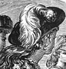
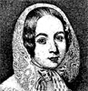

Collective Biographies of WomenAn Annotated Bibliography
Alison Booth
372.
Hamilton, Catherine Jane. Women Writers: Their Works and Ways. First and second series. 2 vols., London: Ward, Lock, 1872; 1892-93. New York: Ward, Lock, & Bowden, 1893.
Search OCLC WorldCat for this title.
Search Google Books for this title.
Hamilton, Catherine Jane. Women Writers: Their Works and Ways. First and second series. 2 vols., London: Ward, Lock, 1872; 1892-93. New York: Ward, Lock, & Bowden, 1893.
TOC: 1st ser. Frances Burney (Madame d'Arblay); Mrs. Inchbald; Madame de Staël; Mrs. Barbauld; Hannah More; Lady Anne Barnard; Joanna Baillie; Lady Nairn; Mrs. Radcliffe; Maria Edgeworth; Amelia Opie; Jane Austen; Lady Morgan (Sydney Owenson); Susan Edmonstone Ferrier; Mary Russell Mitford; The Countess of Blessington; 2d ser.: Mrs. Hemans; Mrs. Jameson; Fredrika Bremer; Harriet Martineau; Letitia Elizabeth Landon (Mrs. Maclean); Honourable Mrs. Norton (Lady Stirling-Maxwell); Elizabeth Barrett Browning; Mrs. Gaskell; Charlotte Brontë; George Eliot (Mary Anne Cross); Adelaide Anne Procter; Louisa May Alcott.
-
Madame de Stael
-
Miss Burney
-
 Mrs. Elizabeth Inchibald
Mrs. Elizabeth Inchibald -
Mrs. Barbauld
-
 Hannah More
Hannah More -
 Joanna Baillie
Joanna Baillie -
 Maria Edgeworth
Maria Edgeworth -
 Amelie Opie
Amelie Opie -
 Sydney, Lady Morgan
Sydney, Lady Morgan -
 Mary Russell Mitford
Mary Russell Mitford -
 Lady Blessington
Lady Blessington -
Frederika Bremer
Search OCLC WorldCat for this title.
Search Google Books for this title.